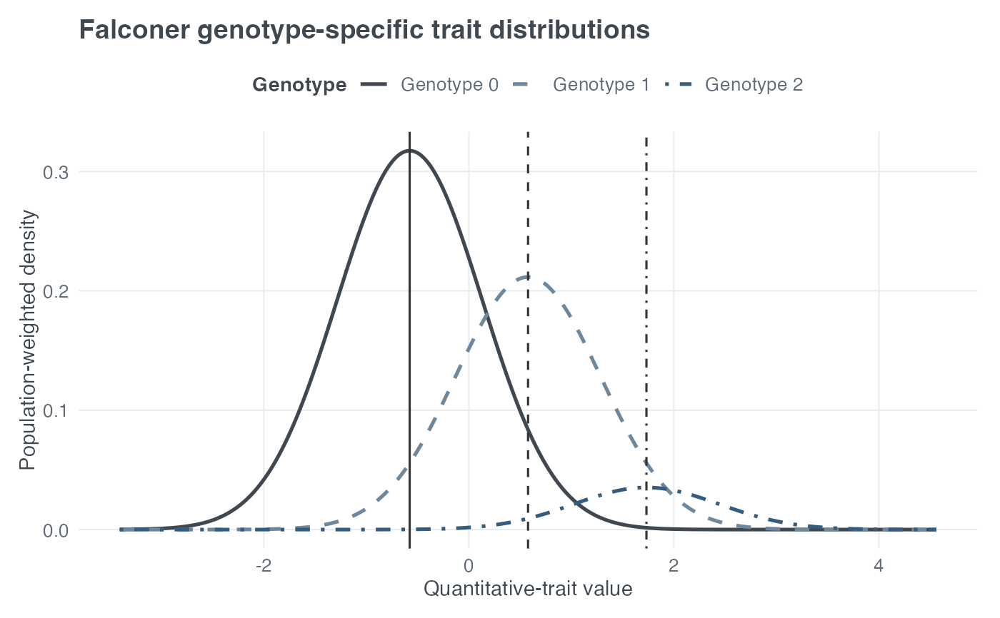
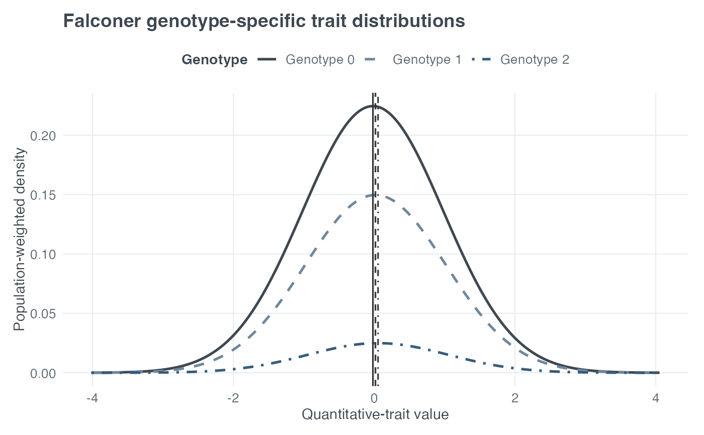

Plot Falconer Genotype-Specific Quantitative-Trait Distributions
Source:R/plot_falconer_distribution.R
plot_qtl_genotype_distribution.RdDisplays the three normal quantitative-trait distributions implied by a validated single-trait Falconer model. Large QTL variance separates the genotype distributions relative to their residual variation; small QTL variance makes them overlap heavily.
Arguments
- qtl_var
QTL variance in
(0, 1).- tau
Dominance-to-additivity ratio.
- pd
Increaser-allele frequency in
(0, 1).- type
Either
"density"for theoretical normal curves or"histogram"for a simulated population.- scale
Either
"density"or"frequency". For theoretical curves, frequency scaling weights each density by its Hardy–Weinberg genotype frequency. For histograms, it selects normalized densities or counts.- n
Total population size simulated in histogram mode.
- seed
Optional non-negative integer used locally for reproducible histogram simulation. The caller's random-number state is restored.
- show_means
Logical; mark the three theoretical genotype means.
- verbose
Logical; passed to the validated Falconer parameter backend.
- title
Optional plot title.
- return_data
Logical; return the plotting data frame instead of the ggplot object. The Falconer model is retained in its
falconer_modelattribute.
Details
Conditional on genotype j, the plotted trait follows a normal
distribution with the corresponding Falconer mean and common residual
variance 1 - qtl_var. Genotypes 0, 1, and 2 have Hardy–Weinberg
frequencies (1 - pd)^2, 2 * pd * (1 - pd), and pd^2. Genotypes may
also be interpreted as bb, Bb, and BB, respectively.
Density mode is analytic and performs no simulation. Histogram mode first
samples genotypes from their Hardy–Weinberg frequencies and then samples
trait values from the corresponding conditional normal distributions.
The x-axis is the quantitative-trait value. In analytic density mode, the
y-axis is genotype-specific density when scale = "density" and
population-weighted density when scale = "frequency". In histogram mode,
the y-axis is normalized density or bin count for those respective scales.
Examples
# A large QTL effect visibly separates the genotype distributions.
plot_qtl_genotype_distribution(
qtl_var = 0.5, tau = 0, pd = 0.25, scale = "frequency"
)

# A very small QTL effect produces almost complete overlap.
plot_qtl_genotype_distribution(
qtl_var = 0.0005, tau = 0, pd = 0.25, scale = "frequency"
)
